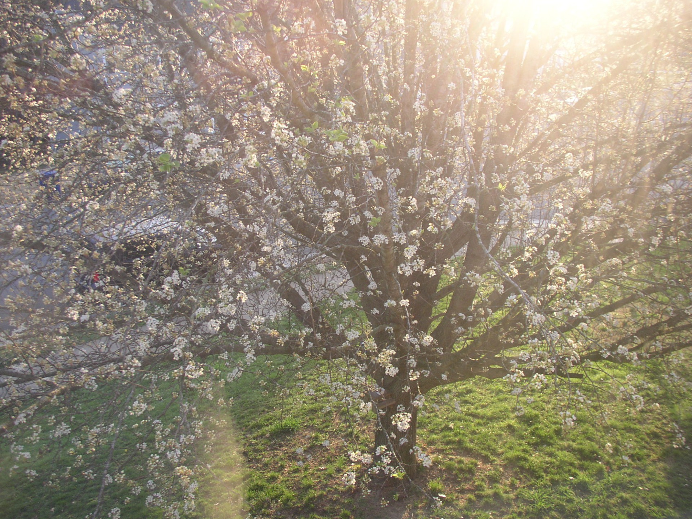
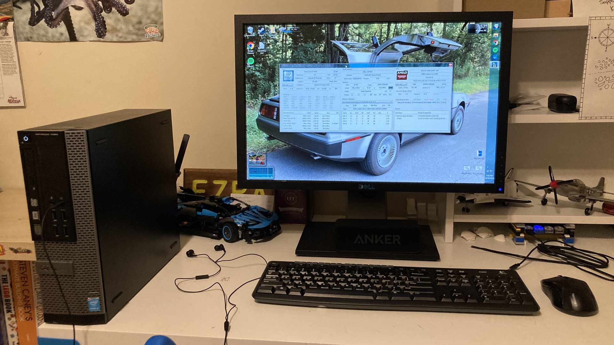
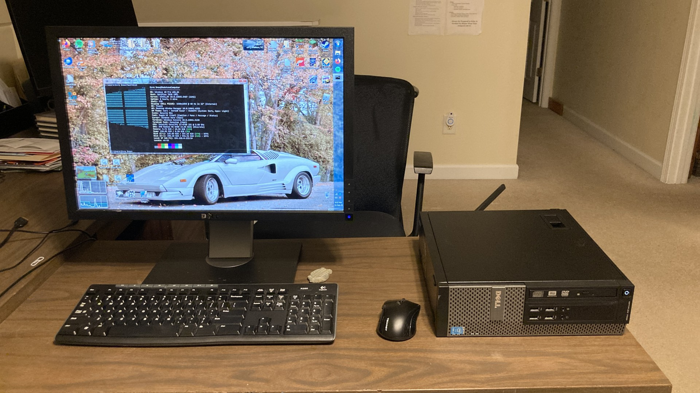
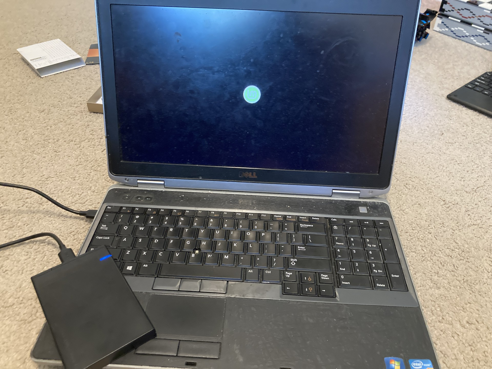

Welcome!
Hey! My name is Ezra Snow, sometimes known as LightSaber online (mainly in video games). I live in North Carolina, and I'm homeschooled. I'm currently a junior in highschool. I'm 16 years old, and I enjoy computers and computer gaming. My favorite color is blue, because it's an amazing color.
This site probably won't have much on it for now. Mostly just occasional computer related projects. I'll probably expand it later, as I learn more about programming and computers.
My most recent projects

My redstone computerOct 10, 2024
This is my main gaming PC. It's a 9-year old Dell OptiPlex 7020 (the model is 12 years old now) that I upgraded significantly from its original specs.
About me
My name is Ezra Snow. I live in North Carolina. I'm 16, homeschooled, and a junior in highschool.
I LOVE working with computers. I probably spend a little too much time on my computer, lol. I love learning about all the different parts of a computer, and how upgrading different parts affects how my computer works.
As part of that, I have inevitably gotten into programming. I made this website from scratch with the Materialize framework. (So not really from scratch, but sort of.) It was pretty cool to develop. The framework hasn't been updated in some time, but it still works perfectly fine in Firefox 128 ESR.
After I finish high school, I plan on majoring in computer science in college and then after that, I want to do something computer science/IT related.
My favorites:
- Favorite color: Blue
- Favorite operating system: Windows 7 (Aurora Linux is a close second, Windows 10 is a distant third)
- Favorite computer type: Early 2010s laptops (because they're upgradable and portable)
- Favorite hobbies: Computer gaming and programming
I am a follower of Jesus Christ. I believe that God made us as good people, but we chose to turn away from him and live in sin, and that everyone has sinned. As sinners, we are doomed to die. But God in his mercy sent Jesus to live on earth, and die for our sins. But Jesus rose from the dead, and has returned to be with God our Father. In doing this, God opened a way for us to know him personally. If we come to the Father through Jesus and repent of our sins, we will be saved from death, and we will be able to live forever with God. If you are reading this, and you aren't currently in a relationship with God, I encourage you to find a church wherever you live, and to learn about God through Scripture.
My computers
Upgrades are marked with an arrow (→). Significant upgrades are marked in bold.

Redstone Computer
My main computer is an old OptiPlex desktop that I upgraded significantly to make a kinda sorta gaming PC. It's been my daily driver since October 2024.
- CPU: Intel Core i5-4590 → Intel Core i7-4790
- RAM: 8 GB (2x4GB) DDR3 → Crucial 16 GB (2x8GB) DDR3
- GPU: Intel HD 4600 (iGPU) → Radeon RX 6400 (dGPU)
- Storage: 128 GB 2.5" SSD → 500 GB Crucial MX500 2.5" SSD + 1 TB Western Digital Blue 2.5" HDD
- Networking: Intel I217-LM Ethernet → TP-Link Archer TX55E Wi-Fi 6 + Bluetooth 5.3
- Main OS: Windows 10 Pro (but I'm switching to Linux after Windows 10 EOL)

My old school laptop (no longer used)
This was an old Dell Latitude I used for school, and the little gaming it could do, from January 2022 to October 2024. It was replaced by my redstone computer. My family's had this laptop since 2013. I might resurrect it as a Windows 7 nostalgia machine at some point.
- CPU: Intel Core i7-3540M
- RAM: 8 GB (2x4GB) DDR3 → 16 GB (2x8GB) DDR3
- GPU: Intel HD 4000 (iGPU)
- Storage: 750 GB Western Digital Black 2.5" HDD → 500 GB Crucial MX500 2.5" SSD
- Main OS: Windows 7 Professional → Windows 10 Pro
My projects
A listing of all my projects, past and present.
Oct 10, 2024
This is my main gaming PC. It's a 9-year old Dell OptiPlex 7020 (the model is 12 years old now) that I upgraded significantly from its original specs.
For other kinds of projects, be sure to check out my GitHub profile!